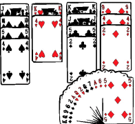

|  |
�����WTM wishes to pay all due respect and admiration to the King of rock-n-roll, Elvis Presley (for his song Jail House Rock, the inspiration for this problem's title) and to the great story teller, Lewis Carroll (for his use of cards in his famous story about Alice), as the two underlying themes built into this story problem. Enjoy solving it.
�����Legend has it that in the days of the Old West there was a little town called Naipesville. Its inhabitants were strangely enough a mere deck of cards, the type used to play poker and similar games. There were 4 neighborhoods - spades, hearts, diamonds, and clubs - with 13 persons each (Ace to 10, jack, queen, and king). Also living in no particular neighborhood were two homeless jokers, making a grand total of 54 beings living here.
�����Like many such rough-and-tumble towns of those days, there were some bad guys, er bad "cards", that had to be put in their jail for a while. The jail here had something special about it: an old grandfather clock! This clock also sounded chimes in a special way. Not only did it mark the number of hours, like 3 chimes at 3:00, but also one chime each at 3:15, 3:30, and 3:45 of that hour. A similar procedure was used for other hours, day and night.
�����Moreover, this clock was used in an unusual way, besides telling time. A prisoner's time spent behind bars was measured by the number of chimes made by the clock. Depending on the case, the sentence could be for 1000, 2000, or whatever, chimes of the famous clock. And the prisoner was expected to keep track of the count in order to know when he should be released. While that may seem odd, it's just the way the things were done.
�����One day one of the jokers was brought before the court. The King of Spades was the judge, and his queen was his assistant judge. It seems this funny fellow had made a joke about the royalty that was not appreciated by them. So as the King pronounced the verdict of guilty, his wife stood up to announce the sentence, according to the number of chimes. She said, very pompously, "He shall be encarcelated for a time of eleven thousand, eleven hundred, and eleven chimes of the grandfather clock!!"
�����It was 12:01 p.m. when he was taken to jail and his cell door was closed. This was important because he missed the right to count the 12 chimes of "noon" that day. [On those occasions of multiple chimes, they sounded 3 seconds apart.] His first 3 came at 12:15, 12:30, and 12:45. And the next four chiming occasions he only heard one each time. He was becoming desperate. Not until came 2 p.m. could he hear more than one chime.
�����While he was moaning and groaning his sad fate, the prisoner in the adjoining cell, the Jack of clubs, said "Psstt! Hey, buddy. Try algebra, and look for patterns! Then you'll know exactly when you'll get out."
�����"Ah, a ray of hope," he thought. He recalled that he had done fairly well in algebra in high school, so maybe this would relieve his tensions. And before long, he had it figured out with a simple equation or two, right down to the day, hour, minute and second. He began to rest much easier from that point on. (No sleepless nights trying to count the chimes anyway!)
�����Your task is to find out what the joker had done, namely, compute his release date and time to the exact second. [Oh yes, I almost forgot to mention: he was put in jail on January 1 of this year.]
NOTE: Before writing out your answer, please check our Guide lines for Writing POW Answers.
| Comments? Send e-mail. | Back to top | Go back to Home Page | Go back to Contents |